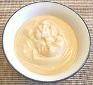

 |
Joe's Mustard SauceUSA - Florida | ||||
| Makes: Effort: Sched: DoAhead: |
11 oz * 10 min Yes |
This sauce is supposed to be the one served with crab claws at the famous Joe's Stone Crab restaurant in Florida. Personally I find it too strong for crab, and it turns a low calorie dish into a high calorie one. It's very tasty with celery sticks, cold meats and the like though. Var: I like to make it a touch thinner with 1/3 cup of cream so it doesn't coat as thickly. | |||
|
|
1 1 ----- 2 1 1/4 1/8 ----- |
T c --- t t c t --- |
Dry English Mustard Mayonnaise -- Flavoring Worchestershire Sauce A1 Steak Sauce Cream, heavy Salt ------------ |
Make - nbsp; (10 min)
|